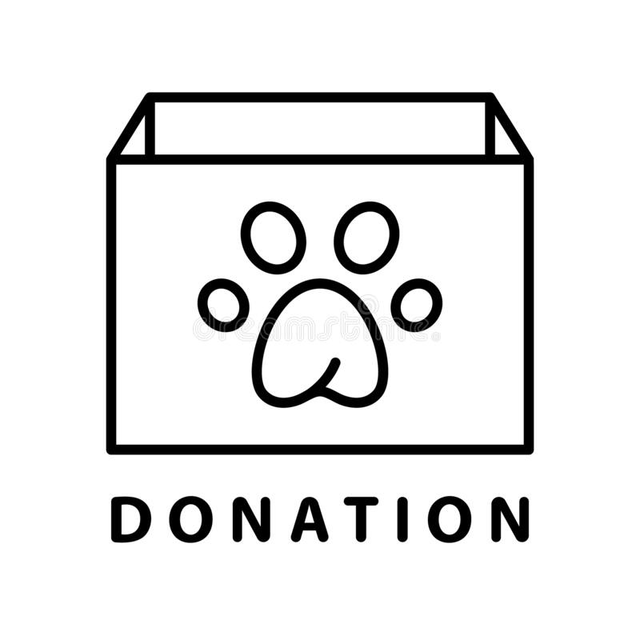

about pets
Normally " being a pet" refers to an animal kept in a home. An animal which runs in the wild or is kept in a zoo, it belongs to no one in particular and it is not given any special treatment by the public. There are situations when a " pet" animal is offered the best of treatment.
A lucky animal may be kept by humans for enjoyment or companionship. It would be an object which gains the affections.
more about pet Free info
